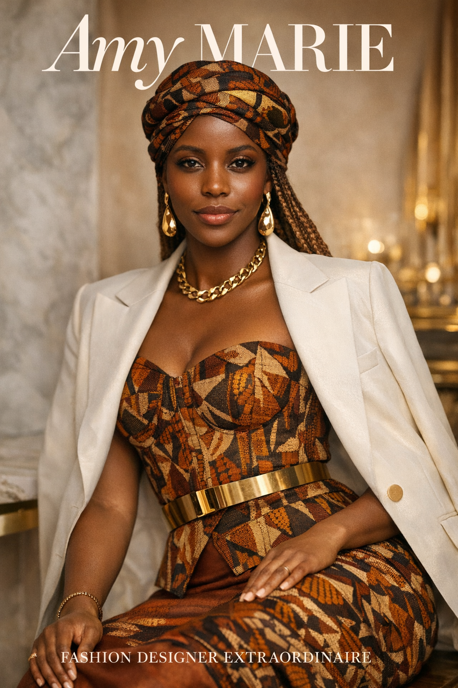
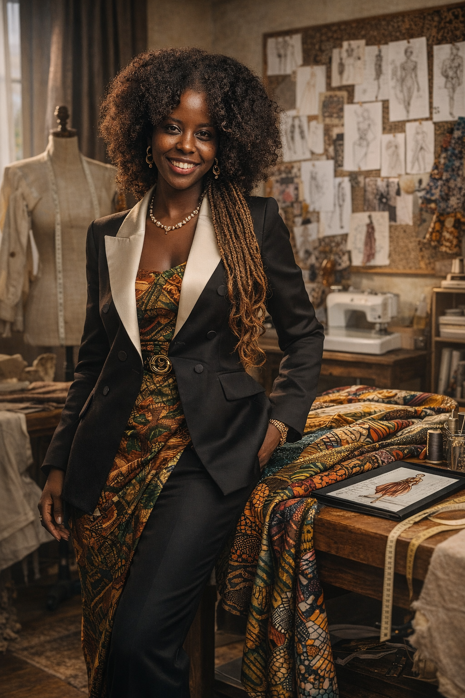
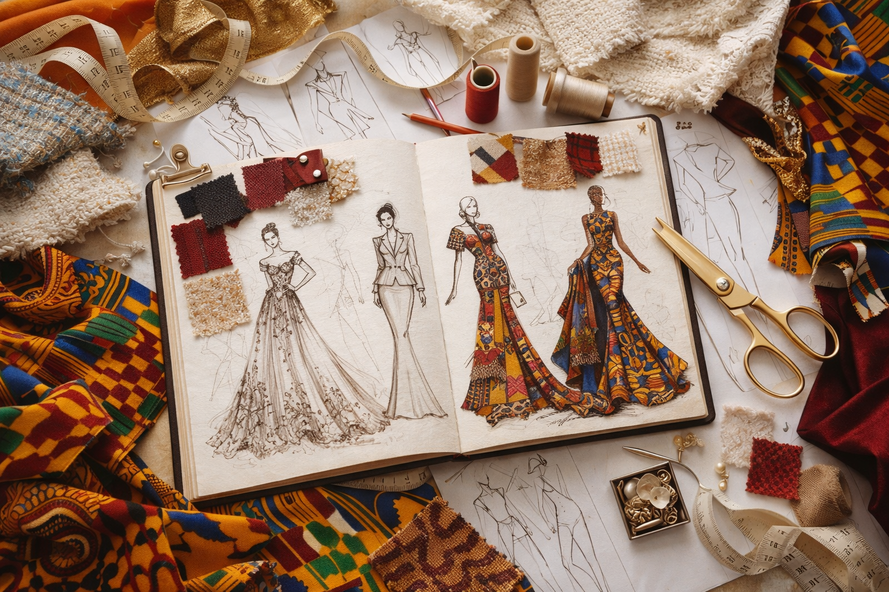
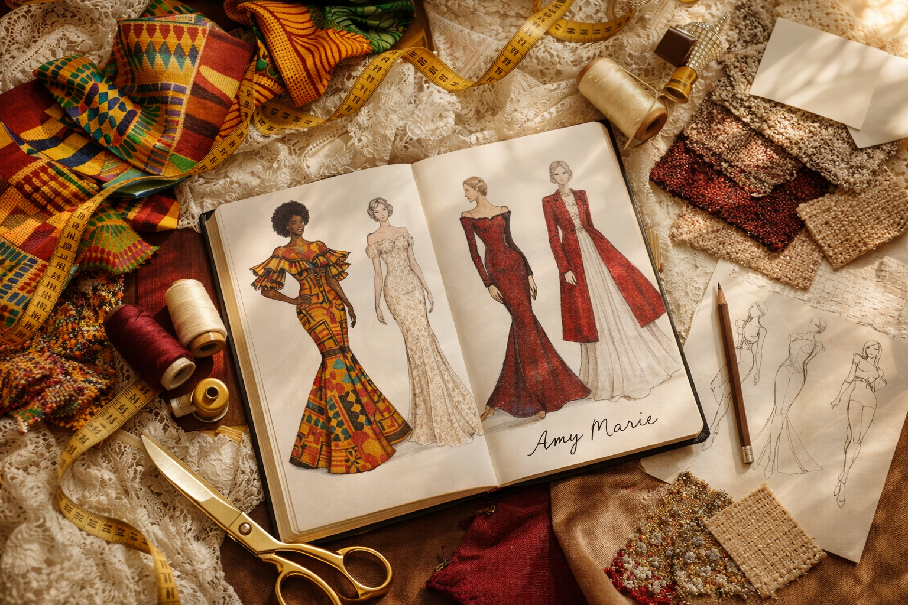

Amy Marie is not simply a fashion designer — she is a curator of identity.
Her work embodies quiet confidence, refined femininity, and timeless strength. Every silhouette she creates carries intention. Every texture speaks. Every detail is deliberate.
For Amy, fashion is not about trends. It is about presence. She designs for the woman who understands that luxury is not loud — it is felt.
Amy Marie’s love for fashion began long before her first formal sketch. As a young girl, she was drawn to fabrics, structure, and the transformative power of clothing. She understood early that garments could change how a person feels, walks, and introduces themselves to the world.
Growing up surrounded by strong cultural roots and artistic influences, she developed a fascination for blending tradition with modern elegance. Travel, exposure to European architecture, and observing handcrafted African textiles deeply shaped her creative perspective.
Each collection she produces reflects her journey — disciplined, inspired, and emotionally intentional.
Fashion, for her, became more than a career. It became a calling.
Inside her studio, ideas take form.
Sketches evolve into structured silhouettes. Fabrics are selected not only for beauty, but for emotion. Every cut, every seam, every finish is refined with precision.
Amy believes luxury is built in the details — the unseen stitching, the balance of proportion, the weight of a fabric against the skin. Her workspace is a sanctuary of creativity, discipline, and artistry.

Amy Marie’s designs are a sophisticated dialogue between African heritage and European old-school elegance.
From Africa, she draws richness — bold textiles, intricate patterns, symbolic textures. From Europe, she embraces refinement — structured tailoring, timeless silhouettes, understated grace.
The result is a seamless fusion of vibrancy and restraint. Tradition and modernity. Strength and softness.
Her pieces do not scream for attention — they command it.


Amy believes that luxury brands do not sell clothes.
They sell identity.
Every garment she creates is designed to express who the wearer is — powerful, elegant, intentional.
She designs pieces that last beyond seasons. Beyond trends. Beyond noise.
Her philosophy is simple: When a woman wears Amy Marie, she should feel unforgettable.
Amy Marie refined her technical foundation at the prestigious Central Fashion Institute, where she studied advanced garment construction, textile innovation, and couture tailoring.
Her education strengthened her creative instinct with discipline and technical excellence — allowing her to build a brand rooted in both artistry and structure.
Amy Marie envisions a global luxury house that represents culture, craftsmanship, and conscious elegance.
She is not building a brand for the moment.
She is building a legacy.